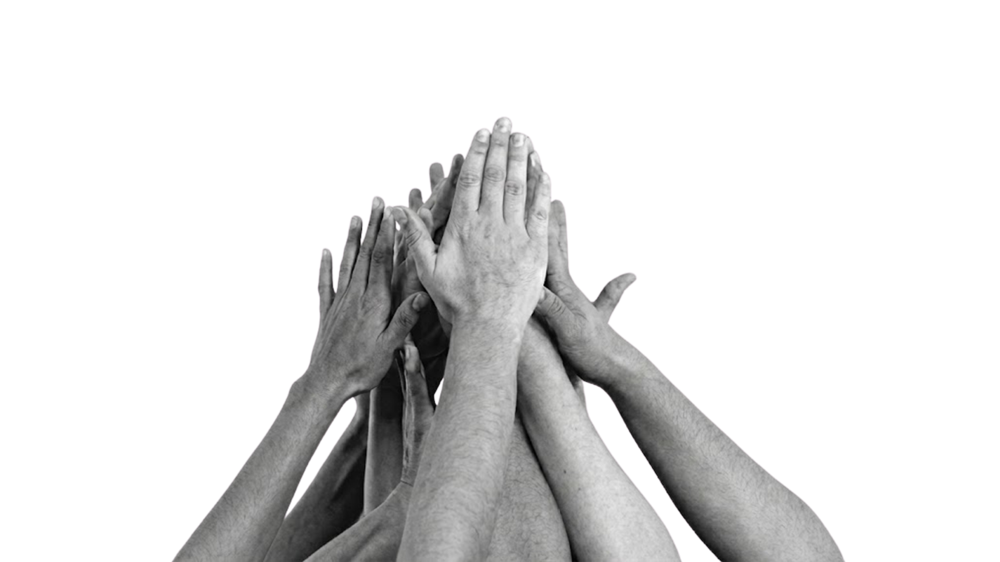
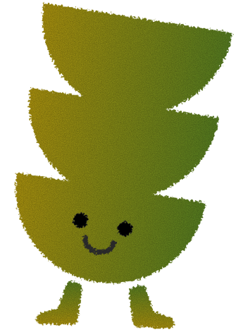
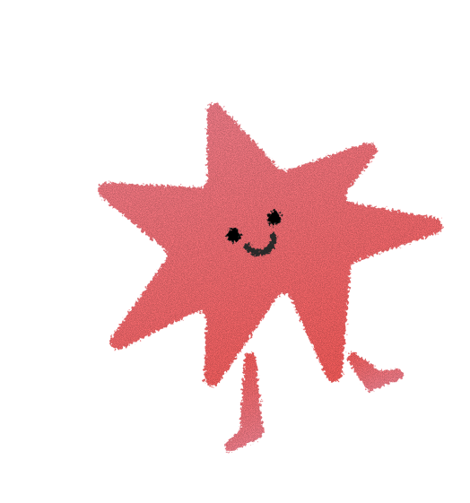
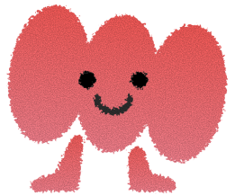

“CREEMOS QUE TODAS LAS PERSONAS PUEDEN SALIR ADELANTE SI SE DAN OPORTUNIDADES Y HERRAMIENTAS. NOS MUEVE TRANSFORMAR REALIDADES.”






El progreso real nace de las manos que se atreven a aprender algo nuevo cada día”

Impulsar el desarrollo integral y la autonomía familiar a través de herramientas que generen bienestar y estabilidad económica.
Apostamos por un mundo equitativo donde todos vivan con dignidad. Logramos esto a través de capacitaciones gratuitas para la comunidad y con costo para microempresarios, entregando herramientas reales para que cada vecino y cada microempresa pueda progresar.
Con tu apoyo, financiamos los talleres gratuitos que entregan estabilidad y alegría a cientos de familias de El Monte, Paine y Buin. ¡Únete a este gran equipo!